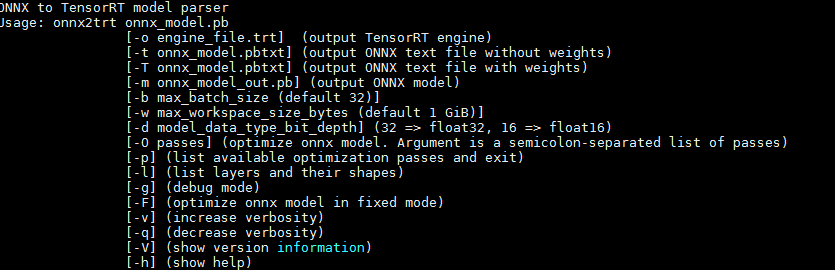

量化工具使用
mmdetection¶
mmcv
import mmcv
# 1.图片的读存，显示,后面调用的opencv的api
img = mmcv.imread('test.jpg') # bgr
rgb_img = mmcv.bgr2rgb(img)
gray_img = mmcv.bgr2gray(img)
gray_img = mmcv.imread('test.jpg', flag='grayscale')
mmcv.imwrite(img, 'out.jpg')
mmcv.imshow(img, win_name='test image', wait_time=200) # mmcv.imshow(img,win_name='',wait_time=0)
# 2. img resize,多了个参数 return_scale=False,如果True，返回(resized_img,(w_scale,h_scale))
mmcv.imresize(img, (1000, 600), return_scale=True) # (w,h)
mmcv.imresize_like(img, dst_img, return_scale=False) # the same size of dst_img
mmcv.imrescale(img,0.5)
mmcv.imrescale(img, (1000, 800)) # resize so that the max edge no longer than 1000, short edge no longer than 800,without changing the aspect ratio,同等比例缩放
# 3.旋转图片
img_ = mmcv.imrotate(img, 30|-30) # 默认旋转，正顺时针，负逆时针，默认带超出边界的截断并且尺寸不变，空白部分用0填充，旋转中心默认图片中心
img_ = mmcv.imrotate(img, 30, scale=1.5) # 放大1.5倍的同时并旋转30度
img_ = mmcv.imrotate(img, 30, center=(100, 100)) # 修改旋转中心为(100,100)
img_ = mmcv.imrotate(img, 30, auto_bound=True) # 超出边界的保留其余补0像素，尺寸改变
# 4.flip
mmcv.imflip(img) # horizontally
mmcv.imflip(img, direction='vertical') # vertically
# 5.crop
mmcv.imcrop(img, np.array([0, 0, 100, 100])) # (101,101,3) # 闭区间[xmin,xmax]
mmcv.imcrop(img, np.array([[10, 10, 100, 120], [0, 0, 50, 50]])) # 同时切多张图
mmcv.imcrop(img, bboxes, scale_ratio=1.2) # 切图后并放缩
# 6.padding
mmcv.impad(img, shape=(1000, 1200), pad_val=0) # (h,w)
mmcv.impad(img, shape=(1000, 1200), pad_val=(100, 50, 200)) # bgr
mmcv.impad(img, padding=(10, 20, 30, 40), pad_val=0) #left,right,top,bottom->0
mmcv.impad(img, padding=(10, 20, 30, 40), pad_val=(100, 50, 200))
mmcv.impad_to_multiple(img, 32) # 填充图像，使每个边缘都是某个值的倍数。
# video
# 1.video信息
video = mmcv.VideoReader('test.mp4')
# 视频宽，视频高，视频分辨率(w,h),视频帧率(30),视频帧数
print(video.width, video.height, video.resolution, video.fps,len(video))
# 2.迭代视频
[print(frame.shape) for frame in video] # 1.直接迭代
frame = video.read() # 2.read the next frame
frame = video[50] # 3.按照索引取帧
frame = video[50:100] # 取多帧
# 3.video->images,images->video,other util
video.cvt2frames('out_dir')
mmcv.frames2video('out_dir', 'test.avi')
mmcv.cut_video('test.mp4', 'clip1.mp4', start=3, end=10, vcodec='h264')
mmcv.concat_video(['clip1.mp4', 'clip2.mp4'], 'joined.mp4', log_level='quiet')
mmcv.resize_video('test.mp4', 'resized1.mp4', (360, 240))
mmcv.resize_video('test.mp4', 'resized2.mp4', ratio=2)
# 4.show image
mmcv.imshow('a.jpg') # path
mmcv.imshow(img) # ndarray
# bboxes = np.array([[0, 0, 50, 50], [20, 20, 60, 60]])
mmcv.imshow_bboxes(img, bboxes) # show image with bounding boxes
detectron2¶
detectron2 documentation|pytorch>=1.6
pycuda¶
安装
pyCuda下载源码，并编译
# 1.源码解压 tar -zxf pycuda-VERSION.tar.gz
# 2 TypeError:attrib() got an unexpected keyword argument 'convert'
pip uninstall attrs
pip install attrs==19.1.0
# 3.编译PyCUDA
cd pycuda-VERSION
python configure.py --cuda-root=/usr/local/cuda
sudo make install # or make install
# 4.测试
cd pycuda-VERSION/test
python test_driver.py # 输出OK即成功
常见用法
# 在使用PycUDA之前，必须导入并初始化;可以 pycuda.autoinit自动初始化，也可以手动执行初始化、上下文创建和清理
# 1.自动初始化
import pycuda.autoinit # 这个是自动初始化上下文的方法，其实执行了如下操作
#--------------------------
import pycuda.driver as cuda
cuda.init()# Initialize CUDA
from pycuda.tools import make_default_context
# context：如果环境变量 CUDA_DEVICE 设置时，其整数值用作设备编号。如果文件 .cuda-device 存在于用户的主目录中，其内容的整数值用作设备号。否则，所有可用的CUDA设备都将以循环方式进行尝试。
context = make_default_context() # 创建默认的上下文
device = context.get_device()
import atexit
atexit.register(context.pop)
#---------------------------
# 2.手动初始化
import pycuda.driver as cuda
cuda.init()
device = cuda.Device(0) # 可以根据3输出一些想要的信息
ctx = device.make_context() # 手动创建上下文
.......# 可以写一些使用代码
ctx.pop()# 手动清空上下文
del ctx # 删除上下文
import numpy as np
import pycuda.driver as cuda
import pycuda.autoinit
from pycuda.compiler import SourceModule
# 1.数据传输
data = np.random.randn(4,4).astype(np.float32) # cpu上的数据
data_memory_gpu = cuda.mem_alloc(data.nbytes) # 在gpu上给data分配内存
cuda.memcpy_htod(data_memory_gpu,data) # 把data从cpu转移到gpu
# 2.gpu中取回数据
data_doubled = numpy.empty_like(data)
cuda.memcpy_dtoh(data_doubled, data_memory_gpu) # 从gpu内存中取数据
# 3.常用的有用信息
import pycuda.driver as cuda
cuda.init()
cuda.Device.count() # 返回设备gpus的总数量
cuda.Device(0) # 设置要使用gpu的ID
cuda.Device(device_id).name() # 返回gpu型号
cuda.Device(device_id).get_attributes() # 获取属性
cuda.Device(device_id).total_memory() / 1e9 # 获取该号gpu的总内存
available, total = cuda.mem_get_info() # 获得所有设备的可用内存和总内存
example
- 初始化PyCUDA模块。
- 导入一个用于编译的类。
- 定义一个存储着CUDA代码的字符串。
- 构造一个类对象（编译CUDA代码，使之成为可以被执行的GPU程序）。
- 从类对象中获得一个函数的执行入口。
- 通过这个入口，执行GPU程序。
import numpy as np
import pycuda.autoinit #以自动的方式对pycuda进行初始
from pycuda.compiler import SourceModule # 编译kernel函数的类
import pycuda.gpuarray as gpuarray
# 通过字符串定义kernel函数
kernel_code = r"""
void __global__ add(const float *x, const float *y, float *z)
{
const int n = threadIdx.y*blockDim.x+threadIdx.x;
z[n] = x[n] + y[n];
}
"""
# 编译kernel函数
mod = SourceModule(kernel_code)
# 获取函数接口
add= mod.get_function("add")
# 定义三个二维数组并转换成pycuda中的gpuarray
A = np.zeros((10, 10))
B = np.ones((10, 10))
C = np.zeros((10, 10))
A_GPU = gpuarray.to_gpu(A.astype(np.float32))
B_GPU = gpuarray.to_gpu(B.astype(np.float32))
C_GPU = gpuarray.to_gpu(B.astype(np.float32))
# 执行kernel函数，和cuda c++一样定义griddim和blockdim;
add(A_GPU, B_GPU, C_GPU, grid=(1,1,1), block=(10,10,1))
C = C_GPU.get()
print(C)
# 编译kernel代码的时间比较耗时，编译一次之后后面就快了。
pytorch_to_onnx¶
torch.onnx.export(
model, # net
args, # inputs,torch.randn(1,3,h_size,w_size)
f, # onnx_name,xxx.onnx
export_params=True,# 是否导入参数，默认True,如果只是想要网络结构，导出为False
verbose=False, # 是否打印debug description of the trace.
training=<TrainingMode.EVAL: 0>, # TrainingMode.EVAL:导出推理模型，默认即可
input_names=None, # list of strings, default empty list-->['input0']
output_names=None, # list of strings, default empty list-->['output0']
aten=False,
export_raw_ir=False,
# 1.torch.onnx.OperatorExportTypes.ONNX 默认，用ONNX的op代替pytorch op
# 2.xx.ONNX_ATEN:所有op使用aten的op代替pytorch op
# 3.xx.ONNX_ATEN_FALLBACK:该方法阻止ONNX替换PyTorch的OP使用ATen的OP替换，PyTorch2ONNX能通，但ONNX2TRT却不能通，原因是ONNX phaser识别不到非ONNX的OP
operator_export_type=None,
# 默认9，如果onnx2trt报upsample相关错，改为11,例如:RuntimeError: ONNX export failed: Couldn’t export operator aten::upsample_bilinear2d
opset_version=None,
_retain_param_name=True,
do_constant_folding=True,
example_outputs=None,
strip_doc_string=True,
dynamic_axes=None,
keep_initializers_as_inputs=None,
custom_opsets=None,
enable_onnx_checker=True,
use_external_data_format=False,
)
# example
import onnx
inputs = torch.randn(1,3,h_size,w_size)
output_onnx = "xxx.onnx"
input_names = ['input0']
output_names = ['class','boxes','landmark']
torch_out = torch.onnx.export(net,inputs,output_onnx,export_params=True,verbose=False,input_names=input_names,output_names=output_names,opset_version=11,operator_export_type=torch.onnx.OperatorExportTypes.ONNX)
onnx.checker.check_model(onnx.load(output_onnx)) # 检查一下生成的onnx模型
TensorRT¶
TensorRT是推理框架，可以理解为把其他框架模型转为TensorRT模型，然后在tensorRT中可以针对NVIDIA自家GPU实施优化策略，并进行部署加速。
Documentation Archives API|TensorRT7.0.0-->pytorch 1.3.0 or older
- TensorRTGA for linux，按照自己的
cuda & cudnn版本即可
cat /usr/local/cuda/version.txt
cat /usr/local/cuda/include/cudnn.h | grep CUDNN_MAJOR -A 2
tar -zxvf TensorRT-xxx.tar.gz
cd TensorRT-xxx
cd python && pip install tensorrt-xx.whl # 安装TensorRT-python
cd uff && pip install uff-xxx.whl # 安装UFF
cd graphsurgeon && pip install graphsurgeon-xx.whl # 安装graphsurgeon
# cd onnx_graphsurgeon && pip install onnx_graphsurgeon-xx.whl
# 建立c++环境，会在TensorRT目录的bin文件夹下生产对应的可执行文件
cd sample
vi Makefile.config # 修改CUDA路径
make
# 环境配置
~sudo vim ~/.bashrc
# 添加下面三行
export LD_LIBRARY_PATH=$LD_LIBRARY_PATH:/home/chenyuyang/TensorRT-6.0.1.5/lib
source ~/.bashrc
tensorrt使用
①创建LOG管理器，用于记录tensorrt的errors, warnings, and informational messages
import tensorrt as trt
TRT_LOGGER = trt.Logger(trt.Logger.WARNING)
②直接使用TensorRT的python api构建网络，然后把pytorch或者其他框架的模型参数填充进去，进行推理(得一步一步构建层，麻烦)，实际案例:TensorRT-version/samples/python/network_api_pytorch_mnist/
Create the builder and network，目的是创建一个推理引擎和网络(pytorch参数填充)create execution context，创建可执行的上下文用于模型推理，然后执行推理即可
③使用解析器解析不同框架模型进行推理:samples/python/introductory_parser_samples
1.Create the TensorRTbuilder and network. # 构建推理引擎和网络
2.Create the TensorRT parser for the specific format.# 根据使用框架构建对应解析器
3.Use the parser to parse the imported model and populate the network.# 解析模型导入tensorrt的network，这里可以选择把引擎序列化(引擎保留了网络定义和网络参数)
4.构建上下文执行推理(创建一些空间来存储中间激活值)，引擎知识网络和参数，前向需要额外空间
- caffe
# 详情例子请看:samples/python/introductory_parser_samples/caffe_resnet50.py
import tensorrt as trt
TRT_LOGGER = trt.Logger(trt.Logger.WARNING)
datatype = trt.float32 # 使用float32
deploy_file = 'data/mnist/mnist.prototxt'
model_file = 'data/mnist/mnist.caffemodel'
with trt.Builder(TRT_LOGGER) as builder, builder.create_network() as network, trt.CaffeParser() as parser:
# model_tensors: tensor -->Itensor(trt object)
model_tensors = parser.parse(deploy=deploy_file, model=model_file,
network=network, dtype=datatype)
# It allows users to export models trained using Caffe to TRT.
class tensorrt.CaffeParser(self: tensorrt.tensorrt.CaffeParser) → None
# 主要是parse方法
def parse(self: tensorrt.tensorrt.CaffeParser, deploy: str, model: str, network: tensorrt.tensorrt.INetworkDefinition, dtype: tensorrt.tensorrt.DataType) → tensorrt.tensorrt.IBlobNameToTensor
# 这个类被用作存储从CaffeParser解析出来的ITensor
class tensorrt.IBlobNameToTensor
# 主要是find方法
def find(self: tensorrt.tensorrt.IBlobNameToTensor, name: str) → tensorrt.tensorrt.ITensor # Given a blob name, this function returns an ITensor object.
-
Tensorflow .pb->.uff文件 使用UffParser解析
-
ONNX
# 详情例子请看:samples/python/introductory_parser_samples/onnx_resnet50.py
# 或者 samples/python/yolov3_onnx
import tensorrt as trt
TRT_LOGGER = trt.Logger(trt.Logger.WARNING)
model_path = "faceDetect.onnx"
with builder = trt.Builder(TRT_LOGGER) as builder, builder.create_network() as network, trt.OnnxParser(network, TRT_LOGGER) as parser:
with open(model_path, 'rb') as model:
parser.parse(model.read())
class tensorrt.OnnxParser(self: tensorrt.tensorrt.OnnxParser, network: tensorrt.tensorrt.INetworkDefinition, logger: tensorrt.tensorrt.ILogger) → None
# 主方法,Parse a serialized Onnx model into the TensorRT network.
def parse(self: tensorrt.tensorrt.OnnxParser, model: str) → bool
序列化模型
# 可选，序列化引擎不可跨平台或TensorRT版本移植，序列化模型后可以存成文件，方便下次加载和推理
serialized_engine = engine.serialize() # 序列化模型
# 1.直接用序列化模型进行推理，需要创建运行时对象
with trt.Runtime(TRT_LOGGER) as runtime: engine =
runtime.deserialize_cuda_engine(serialized_engine)
# 2.存储序列化模型，下次直接加载就行，不用再进行序列化(序列化模型挺耗时的)
with open(“sample.engine”, “wb”) as f:
f.write(engine.serialize())
with open(“sample.engine”, “rb”) as f, trt.Runtime(TRT_LOGGER) as runtime:
engine = runtime.deserialize_cuda_engine(f.read())
onnx-tensorrt¶
onnx-tensorrt|非root用户安装更新cmake
# 方案一：源码编译
# 1. onnx-tensorrt-7.0:https://github.com/onnx/onnx-tensorrt,注意onnx==1.6,所以对应的版本是tensorrt7.0,否则会报不能找到Tensorrt lib的错
# 1.1 checkout
git checkout 7.0 # 选择合适的版本，否则会报版本错
# 2.在再onnx-tensorrt的CMakeLists.txt中加入
link_directories(/ssd/chenyuyang/softwares/TensorRT-7.0.0.11/lib) include_directories(/ssd/chenyuyang/softwares/cuda-10.2/include) include_directories(/ssd/chenyuyang/softwares/TensorRT-7.0.0.11/include)
# 2.add onnx使用源码直接下载安装也行，可以自己选择版本
# 3.构建
mkdir build && cd build
cmake .. -DTENSORRT_ROOT=/ssd/chenyuyang/softwares/TensorRT-7.0.0.11
make -j8
# sudo make install
make DESTDIR=/install/directory install
# 编译出错
# 1.考虑tensorrt版本是否正确，例如onnx==1.6 对应的是tensorrtv7.0
# 2.考虑onnx-tensort版本是否正确，git clone的一般是master版本，需要git checkout xx
pip install onnx==1.6.0 # 可以安装最新的，有时候不同版本会报一些奇怪的错
python3 setup.py install # 安装onnx-tensorrt
onnx2trt my_model.onnx -o my_engine.trt # onnx model --> 序列化的tensorrt引擎
onnx2trt my_model.onnx -d 16 -o my_engine.trt # onnx model --> 序列化的tensorrt Fp16的引擎
onnx2trt my_model.onnx -t my_model.onnx.txt # onnx model-->可读文本
onnx2trt my_model.onnx -O "pass_1;pass_2;pass_3" -m my_model_optimized.onnx # onnx优化输出
onnx2trt -h

# 方案二 python代码
# common.py代码：https://github.com/aditya-dl/RetinaFace-TensorRT-Python/blob/main/common.py，最好从自己安装的tensorrt的sample/python中获得
# 完整示例:https://github.com/aditya-dl/RetinaFace-TensorRT-Python
# 代码如下，示例代码可参考：sample/python/yolov3_onnx
# 最终参考代码：https://github.com/RizhaoCai/PyTorch_ONNX_TensorRT/blob/master/helpers/trt_helper.py
# 遇到的错误合集
# 1. 含有F.Interpolate(上采样插值) 必须以显示的方式提供新的shape，尽量不要使用比例因子，这样结果图会动态计算输出形状，这样Tensorrt不兼容(path:interpolate->onnx:resize->trt:error)，2020.05
y = F.interpolate(y, size=[output.size(2),output.size(3)], mode='bilinear', align_corners=False) # 这样也不行，会发生 Assertion failed: ctx->tensors().count(inputName)，必须设置为常量
y = F.interpolate(y, size=[1024,1024], mode='bilinear', align_corners=False) # 设置为常量，但这也太麻烦了吧，每次都得改
# 2. 上面会发生 Assertion failed: ctx->tensors().count(inputName)，如何解决？
# 使用opset_version=11，导出的onnx模型interpolate转为Resize,但是会有一个单独的Constant层作为Resize输入，但问题是：Constant层并未连接任何输入，onnx->trt时并不能找到Constant层的输入，无法初始化，解决方案:tensorrt7.2.2.3 cuda10.2 cudnn8.05 onnx-tensorrt-7.2.2(master)
# pytorch->onnx:经常会出现，expand, Gather, reshape不支持等,TensorRT对pytorch的维度变化特别不友好，模型转化过程中绝大多数bug都出在维度变化上
# 4.tensorrt部署采坑记录:https://blog.csdn.net/u011605951/article/details/108441935
- 附录
- 1.torch2trt(固定输入):挺有用的
- 2.torch2trt_dynamic(动态输入):更有用,基于1
- 3.mmdetection-to-trt:基于2|2,3 int8量化使用教程
- 4.tiny-tensorrt:使tensorrt部署变的很容易
# install 时候注意 CMakeList.txt 添加下面三行，因为是非root用户，并没有install到/usr,有些库会找不到报错，直接指定路径即可
# include_directories(./plugin) 添加到该路径后面即可
link_directories(/ssd/chenyuyang/softwares/TensorRT-7.0.0.11/lib) include_directories(/ssd/chenyuyang/softwares/cuda-10.2/include) include_directories(/ssd/chenyuyang/softwares/TensorRT-7.0.0.11/include)
pytorch->onnx->trt使用案例¶
# trt推理时碰到错误
# 1.[TensorRT] ERROR: ../rtSafe/cuda/cudaConvolutionRunner.cpp (303) - Cudnn Error in execute: 8 (CUDNN_STATUS_EXECUTION_FAILED)
# solve:I install pytorch with cudatoolkit=10.1 (use conda install) but my tensorrt cuda version is 10.2 so I reinstall cudatoolkit by conda install cudatoolkit=10.2
# 2.[TensorRT] ERROR: safeContext.cpp (184) - Cudnn Error in configure: 7 (CUDNN_STATUS_MAPPING_ERROR) [TensorRT] ERROR: FAILED_EXECUTION: std::exception，属于(trt+pytorch共用产生的错误，一般分开后错误会消失，但是由于预处理等操作必须结合)got CUDNN_STATUS_MAPPING_ERROR when using tensorrt and pytorch together，这种错误一般是gpu内存冲突导致
# solve:I finally make this works. By adding cuda context push and pop on the two ends of doing inference 或者 torch2trt也可以解决